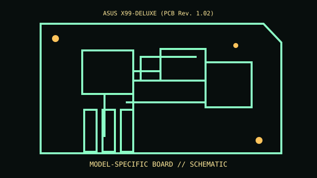

[ MODEL-SPECIFIC COMPONENT // MOTHERBOARDS ]
ASUS X99-DELUXE (PCB Rev. 1.02)
A sourced record of one model and its documented revision-specific behavior. Similar model numbers and later board spins are distinct products.

IDENTIFY THE PCB FIRST: Record silkscreen, assembly revision, product suffix and firmware string. Use revision-matched manuals and support lists; verify against the physical board.
Documented specifications
| Exact model / revision | ASUS X99-DELUXE (PCB Rev. 1.02) |
|---|---|
| Socket / processor | LGA2011-v3 Core i7 Extreme/Xeon E5 v3/v4 only per CPU list and BIOS. |
| Chipset / architecture | Intel X99 Express. |
| Memory | Eight DDR4 DIMMs quad-channel; CPU, rank and population determine capacity/rate. |
| Form factor | E-ATX; verify case clearance. |
| I/O / expansion | PCIe, M.2, SATA/SATA Express, USB 3, Wi-Fi and audio. |
| Firmware / boot compatibility | ASUS UEFI; Haswell-E/Broadwell-E support BIOS-specific. |
Compatibility and revision pitfalls
Not X99-DELUXE/U3.1 or X99-A; do not cross-flash. Follow four-channel population and CPU support table.
Before substitution, check exact CPU/SoC support, minimum BIOS/bootloader, memory population, power connectors and chassis requirements. Matching socket or connector alone does not prove compatibility.
Repair and preservation notes
Inspect delicate socket pins and channels; back up RAID configuration, test memory channel by channel, retain socket cover.
Record provenance, labels, firmware and test conditions. Photograph traces, jumpers and cable routing before repair or cleaning.
Sources & further reading
- ASUS X99-DELUXE manual/downloadsOfficial exact-model files.
- ASUS X99-DELUXE CPU supportManufacturer CPU list/minimum BIOS.
Manufacturer manuals, CPU lists and archived technical references form the basis of this record. Revision-specific documents take precedence over family summaries.